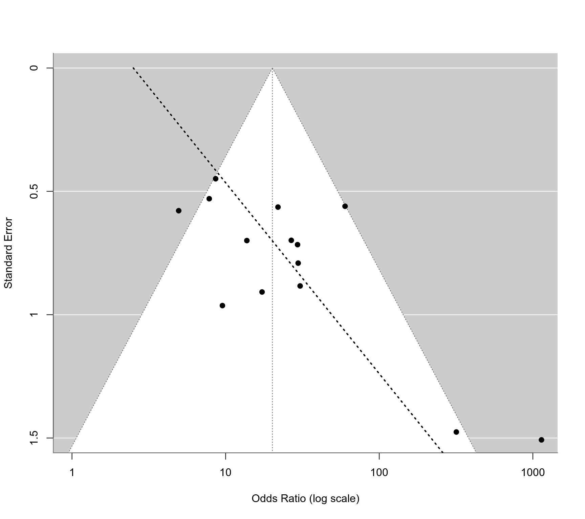
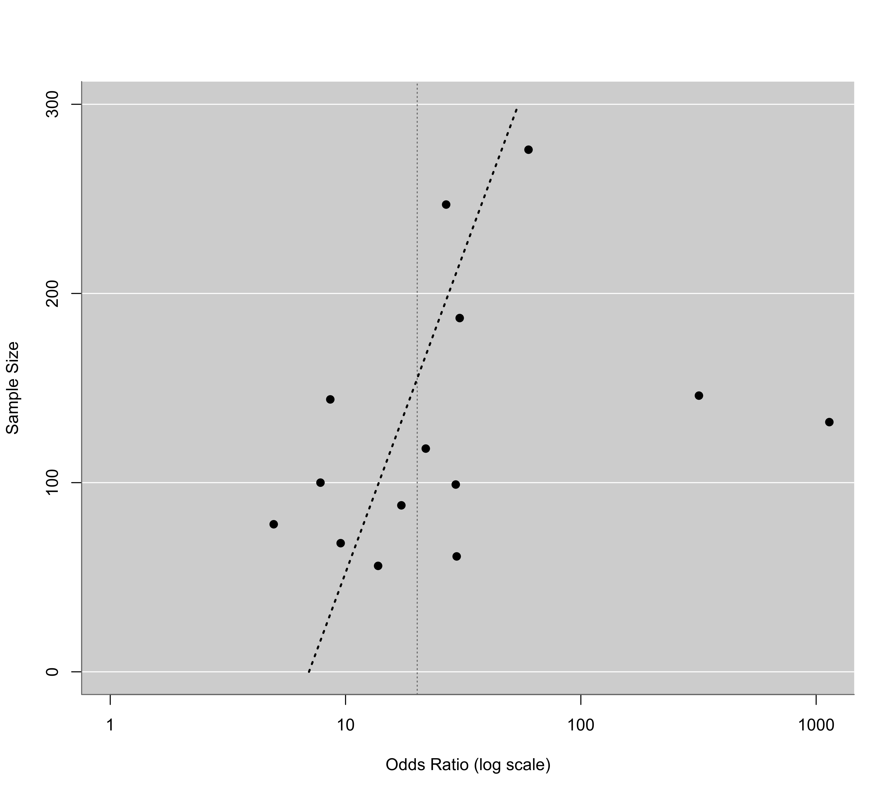
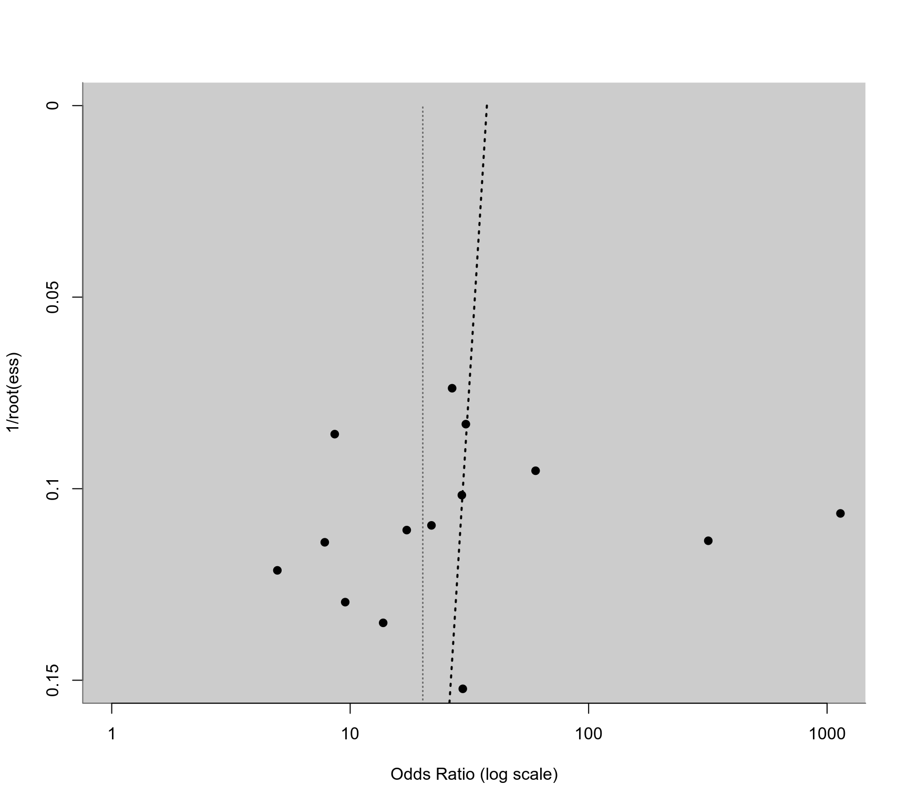

dat.kearon1998.RdResults from diagnostic accuracy studies examining the accuracy of venous ultrasonography for the diagnosis of deep venous thrombosis.
dat.kearon1998The data frame contains the following columns:
| id | numeric | study id |
| author | character | study author(s) |
| year | numeric | publication year |
| patients | character | patient group (either symptomatic or asymptomatic patients) |
| tp | numeric | number of true positives |
| np | numeric | number of positive patients (cases) |
| tn | numeric | number of true negatives |
| nn | numeric | number of negative patients (non-cases) |
The studies included in the dataset examined the accuracy of venous ultrasonography for the diagnossis of a first deep venous thrombosis in symptomatic and asymptomatic patients. Cases and non-cases were determined based on contrast venography. Venous ultrasonography was then used to make a diagnosis, leading to a given number of true positives and negatives.
A subset of this dataset (using only the studies with asymptomatic patients) was used by Deeks et al. (2005) to illustrate methods for detecting publication bias (or small-study effects) in meta-analyses of diagnostic accuracy studies.
Kearon, C., Julian, J. A., Math, M., Newman, T. E., & Ginsberg, J. S. (1998). Noninvasive diagnosis of deep venous thrombosis. Annals of Internal Medicine, 128(8), 663–677. https://doi.org/10.7326/0003-4819-128-8-199804150-00011
Deeks, J. J., Macaskill, P., & Irwig, L. (2005). The performance of tests of publication bias and other sample size effects in systematic reviews of diagnostic test accuracy was assessed. Journal of Clinical Epidemiology, 58(9), 882–893. https://doi.org/10.1016/j.jclinepi.2005.01.016
medicine, odds ratios, diagnostic accuracy studies, multivariate models, publication bias
### copy data into 'dat' and examine data
dat <- dat.kearon1998
head(dat)
#> id study year patients tp np tn nn
#> 1 1 Elias et al. 1987 symptomatic 325 333 483 505
#> 2 2 Appleman et al. 1987 symptomatic NA NA 47 49
#> 3 3 Vogel et al. 1987 symptomatic 20 25 29 29
#> 4 4 Cronan et al. 1987 symptomatic 25 28 23 23
#> 5 5 O'Leary et al. 1988 symptomatic 22 25 24 25
#> 6 6 Lensing et al. 1989 symptomatic 70 77 142 143
### load metafor package
library(metafor)
### calculate diagnostic log odds ratios and corresponding sampling variances
dat <- escalc(measure="OR", ai=tp, n1i=np, ci=nn-tn, n2i=nn, data=dat, add=1/2, to="all")
head(dat)
#>
#> id study year patients tp np tn nn yi vi
#> 1 1 Elias et al. 1987 symptomatic 325 333 483 505 6.7128 0.1672
#> 2 2 Appleman et al. 1987 symptomatic NA NA 47 49 NA NA
#> 3 3 Vogel et al. 1987 symptomatic 20 25 29 29 5.3932 2.2645
#> 4 4 Cronan et al. 1987 symptomatic 25 28 23 23 5.8361 2.3675
#> 5 5 O'Leary et al. 1988 symptomatic 22 25 24 25 4.6540 1.0376
#> 6 6 Lensing et al. 1989 symptomatic 70 77 142 143 6.7946 0.8212
#>
### fit random-effects model for the symptomatic patients
res <- rma(yi, vi, data=dat, subset=patients=="symptomatic")
#> Warning: 2 studies with NAs omitted from model fitting.
res
#>
#> Random-Effects Model (k = 16; tau^2 estimator: REML)
#>
#> tau^2 (estimated amount of total heterogeneity): 1.2663 (SE = 0.7846)
#> tau (square root of estimated tau^2 value): 1.1253
#> I^2 (total heterogeneity / total variability): 66.20%
#> H^2 (total variability / sampling variability): 2.96
#>
#> Test for Heterogeneity:
#> Q(df = 15) = 48.8101, p-val < .0001
#>
#> Model Results:
#>
#> estimate se zval pval ci.lb ci.ub
#> 5.1733 0.3747 13.8057 <.0001 4.4388 5.9077 ***
#>
#> ---
#> Signif. codes: 0 ‘***’ 0.001 ‘**’ 0.01 ‘*’ 0.05 ‘.’ 0.1 ‘ ’ 1
#>
### fit random-effects model for the asymptomatic patients
res <- rma(yi, vi, data=dat, subset=patients=="asymptomatic")
#> Warning: 2 studies with NAs omitted from model fitting.
res
#>
#> Random-Effects Model (k = 14; tau^2 estimator: REML)
#>
#> tau^2 (estimated amount of total heterogeneity): 0.4534 (SE = 0.3776)
#> tau (square root of estimated tau^2 value): 0.6734
#> I^2 (total heterogeneity / total variability): 48.58%
#> H^2 (total variability / sampling variability): 1.94
#>
#> Test for Heterogeneity:
#> Q(df = 13) = 28.3304, p-val = 0.0081
#>
#> Model Results:
#>
#> estimate se zval pval ci.lb ci.ub
#> 3.0039 0.2682 11.2017 <.0001 2.4783 3.5295 ***
#>
#> ---
#> Signif. codes: 0 ‘***’ 0.001 ‘**’ 0.01 ‘*’ 0.05 ‘.’ 0.1 ‘ ’ 1
#>
### estimated average diagnostic odds ratio (with 95% CI)
predict(res, transf=exp, digits=2)
#>
#> pred ci.lb ci.ub pi.lb pi.ub
#> 20.16 11.92 34.11 4.87 83.47
#>
### regression test for funnel plot asymmetry using SE as predictor
reg <- regtest(res, model="lm")
reg
#>
#> Regression Test for Funnel Plot Asymmetry
#>
#> Model: weighted regression with multiplicative dispersion
#> Predictor: standard error
#>
#> Test for Funnel Plot Asymmetry: t = 2.7886, df = 12, p = 0.0164
#> Limit Estimate (as sei -> 0): b = 0.9192 (CI: -0.6698, 2.5082)
#>
### corresponding funnel plot
funnel(res, atransf=exp, xlim=c(0,7), at=log(c(1,10,100,1000)), ylim=c(0,1.5), steps=4)
ys <- seq(0, 2, length=100)
lines(coef(reg$fit)[1] + coef(reg$fit)[2]*ys, ys, lwd=2, lty=3)

### regression test for funnel plot asymmetry using total sample size as predictor
reg <- regtest(res, model="lm", predictor="ni")
reg
#>
#> Regression Test for Funnel Plot Asymmetry
#>
#> Model: weighted regression with multiplicative dispersion
#> Predictor: sample size
#>
#> Test for Funnel Plot Asymmetry: t = 1.8919, df = 12, p = 0.0829
#>
### corresponding funnel plot
funnel(res, yaxis="ni", atransf=exp, xlim=c(0,7), at=log(c(1,10,100,1000)), ylim=c(0,300), steps=4)
ys <- seq(0, 300, length=100)
lines(coef(reg$fit)[1] + coef(reg$fit)[2]*ys, ys, lwd=2, lty=3)

### regression test for funnel plot asymmetry using 1/sqrt(ESS) as predictor (Deeks et al., 2005)
dat$invessi <- 1/(4*dat$np) + 1/(4*dat$nn)
tmp <- rma(yi, invessi, data=dat, subset=patients=="asymptomatic")
#> Warning: 2 studies with NAs omitted from model fitting.
reg <- regtest(tmp, model="lm")
reg
#>
#> Regression Test for Funnel Plot Asymmetry
#>
#> Model: weighted regression with multiplicative dispersion
#> Predictor: standard error
#>
#> Test for Funnel Plot Asymmetry: t = -0.1182, df = 12, p = 0.9079
#> Limit Estimate (as sei -> 0): b = 3.6227 (CI: -0.8066, 8.0520)
#>
### corresponding funnel plot
funnel(tmp, atransf=exp, xlim=c(0,7), at=log(c(1,10,100,1000)), ylim=c(0,.15), steps=4,
refline=coef(res), level=0, ylab="1/root(ess)")
ys <- seq(0, .20, length=100)
lines(coef(reg$fit)[1] + coef(reg$fit)[2]*ys, ys, lwd=2, lty=3)

### convert data to long format
dat <- to.long(measure="OR", ai=tp, n1i=np, ci=tn, n2i=nn,
data=dat.kearon1998, subset=patients=="asymptomatic")
#> Warning: 2 tables with NAs omitted.
dat <- dat[9:12]
dat$group <- factor(dat$group, levels=c(1,2), labels=c("sensitivity", "specificity"))
dat
#> study group out1 out2
#> 1 19 sensitivity 10 15
#> 2 19 specificity 47 6
#> 3 20 sensitivity 15 9
#> 4 20 specificity 29 3
#> 5 21 sensitivity 10 4
#> 6 21 specificity 44 3
#> 7 22 sensitivity 13 10
#> 8 22 specificity 123 0
#> 9 23 sensitivity 10 22
#> 10 23 specificity 55 1
#> 11 24 sensitivity 16 45
#> 12 24 specificity 184 2
#> 13 25 sensitivity 12 37
#> 14 25 specificity 137 1
#> 15 26 sensitivity 13 13
#> 16 26 specificity 66 8
#> 17 28 sensitivity 24 18
#> 18 28 specificity 55 2
#> 19 29 sensitivity 17 10
#> 20 29 specificity 85 6
#> 21 30 sensitivity 5 17
#> 22 30 specificity 45 1
#> 23 31 sensitivity 18 13
#> 24 31 specificity 240 5
#> 25 32 sensitivity 24 4
#> 26 32 specificity 104 0
#> 27 33 sensitivity 26 29
#> 28 33 specificity 81 8
### calculate logit-transformed sensitivities
dat <- escalc(measure="PLO", xi=out1, mi=out2, data=dat, add=1/2, to="all",
include=group=="sensitivity")
dat
#>
#> study group out1 out2 yi vi
#> 1 19 sensitivity 10 15 -0.3895 0.1598
#> 2 19 specificity 47 6 NA NA
#> 3 20 sensitivity 15 9 0.4895 0.1698
#> 4 20 specificity 29 3 NA NA
#> 5 21 sensitivity 10 4 0.8473 0.3175
#> 6 21 specificity 44 3 NA NA
#> 7 22 sensitivity 13 10 0.2513 0.1693
#> 8 22 specificity 123 0 NA NA
#> 9 23 sensitivity 10 22 -0.7621 0.1397
#> 10 23 specificity 55 1 NA NA
#> 11 24 sensitivity 16 45 -1.0144 0.0826
#> 12 24 specificity 184 2 NA NA
#> 13 25 sensitivity 12 37 -1.0986 0.1067
#> 14 25 specificity 137 1 NA NA
#> 15 26 sensitivity 13 13 0.0000 0.1481
#> 16 26 specificity 66 8 NA NA
#> 17 28 sensitivity 24 18 0.2809 0.0949
#> 18 28 specificity 55 2 NA NA
#> 19 29 sensitivity 17 10 0.5108 0.1524
#> 20 29 specificity 85 6 NA NA
#> 21 30 sensitivity 5 17 -1.1575 0.2390
#> 22 30 specificity 45 1 NA NA
#> 23 31 sensitivity 18 13 0.3151 0.1281
#> 24 31 specificity 240 5 NA NA
#> 25 32 sensitivity 24 4 1.6946 0.2630
#> 26 32 specificity 104 0 NA NA
#> 27 33 sensitivity 26 29 -0.1072 0.0716
#> 28 33 specificity 81 8 NA NA
#>
### calculate logit-transformed specificities
dat <- escalc(measure="PLO", xi=out1, mi=out2, data=dat, add=1/2, to="all",
include=group=="specificity")
dat
#>
#> study group out1 out2 yi vi
#> 1 19 sensitivity 10 15 -0.3895 0.1598
#> 2 19 specificity 47 6 1.9889 0.1749
#> 3 20 sensitivity 15 9 0.4895 0.1698
#> 4 20 specificity 29 3 2.1316 0.3196
#> 5 21 sensitivity 10 4 0.8473 0.3175
#> 6 21 specificity 44 3 2.5427 0.3082
#> 7 22 sensitivity 13 10 0.2513 0.1693
#> 8 22 specificity 123 0 5.5094 2.0081
#> 9 23 sensitivity 10 22 -0.7621 0.1397
#> 10 23 specificity 55 1 3.6109 0.6847
#> 11 24 sensitivity 16 45 -1.0144 0.0826
#> 12 24 specificity 184 2 4.3014 0.4054
#> 13 25 sensitivity 12 37 -1.0986 0.1067
#> 14 25 specificity 137 1 4.5182 0.6739
#> 15 26 sensitivity 13 13 0.0000 0.1481
#> 16 26 specificity 66 8 2.0571 0.1327
#> 17 28 sensitivity 24 18 0.2809 0.0949
#> 18 28 specificity 55 2 3.1001 0.4180
#> 19 29 sensitivity 17 10 0.5108 0.1524
#> 20 29 specificity 85 6 2.5767 0.1655
#> 21 30 sensitivity 5 17 -1.1575 0.2390
#> 22 30 specificity 45 1 3.4122 0.6886
#> 23 31 sensitivity 18 13 0.3151 0.1281
#> 24 31 specificity 240 5 3.7780 0.1860
#> 25 32 sensitivity 24 4 1.6946 0.2630
#> 26 32 specificity 104 0 5.3423 2.0096
#> 27 33 sensitivity 26 29 -0.1072 0.0716
#> 28 33 specificity 81 8 2.2605 0.1299
#>
### bivariate random-effects model for logit sensitivity and specificity
res <- rma.mv(yi, vi, mods = ~ 0 + group, random = ~ group | study, struct="UN", data=dat)
res
#>
#> Multivariate Meta-Analysis Model (k = 28; method: REML)
#>
#> Variance Components:
#>
#> outer factor: study (nlvls = 14)
#> inner factor: group (nlvls = 2)
#>
#> estim sqrt k.lvl fixed level
#> tau^2.1 0.4231 0.6505 14 no sensitivity
#> tau^2.2 0.5408 0.7354 14 no specificity
#>
#> rho.snst rho.spcf snst spcf
#> sensitivity 1 - 14
#> specificity -0.4547 1 no -
#>
#> Test for Residual Heterogeneity:
#> QE(df = 26) = 86.5672, p-val < .0001
#>
#> Test of Moderators (coefficients 1:2):
#> QM(df = 2) = 147.4665, p-val < .0001
#>
#> Model Results:
#>
#> estimate se zval pval ci.lb ci.ub
#> groupsensitivity -0.0498 0.2027 -0.2457 0.8059 -0.4472 0.3475
#> groupspecificity 3.0092 0.2582 11.6531 <.0001 2.5031 3.5154 ***
#>
#> ---
#> Signif. codes: 0 ‘***’ 0.001 ‘**’ 0.01 ‘*’ 0.05 ‘.’ 0.1 ‘ ’ 1
#>
### estimated average sensitivity and specificity based on the model
predict(res, newmods = rbind(c(1,0),c(0,1)), transf=transf.ilogit, tau2.levels=c(1,2), digits=2)
#>
#> pred ci.lb ci.ub pi.lb pi.ub tau2.level
#> 1 0.49 0.39 0.59 0.20 0.78 sensitivity
#> 2 0.95 0.92 0.97 0.81 0.99 specificity
#>
### estimated average diagnostic odds ratio based on the model
predict(res, newmods = c(1,1), transf=exp, digits=2)
#>
#> pred ci.lb ci.ub pi.lb pi.ub tau2.level
#> 19.29 11.22 33.14 NA NA NA
#>